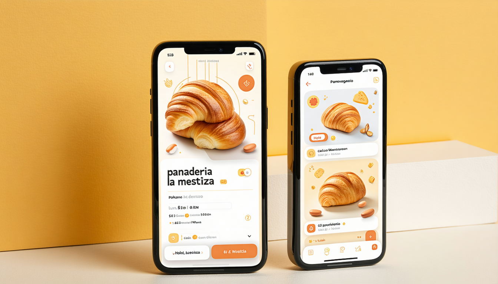

Objetivo: Aplicar estrategias de atención al cliente digital y analizar el funnel de conversión para diseñar protocolos que transformen seguidores en clientes.
Nivel Bloom: Aplicar / Analizar
Si no diseñas el camino entre la atención y la acción, tus seguidores son espectadores — no clientes.
La solución: el Funnel de Conversión 👇
Regla 70-20-10: 70% contenido de valor (TOFU) | 20% confianza (MOFU) | 10% venta (BOFU)
💭 De tus últimas 10 publicaciones, ¿cuántas son TOFU, MOFU y BOFU? ¿Estás vendiendo demasiado o demasiado poco?
Reel: proceso de teñido con achiote y tintes naturales yucatecos.
Alcance: 50,000
Stories: clientas reales usando la ropa + carrusel "5 razones para moda sustentable".
Saves: 340
Story con countdown: "Venta especial + 10% extra por DM".
28 DMs → 14 ventas
💭 ¿Puedes diseñar un funnel similar para tu marca local? ¿Qué contenido pondrías en cada etapa?

Clínica dental implementó chatbot en WhatsApp:
✅ -40% mensajes que requieren humano
✅ +25% citas agendadas fuera de horario
ManyChat — Sin código, flujos visuales
Chatfuel — Para Messenger + IG
Respond.io — Multicanal avanzado
💭 ¿Cuáles son las 5 preguntas que más te hacen en DM? Esas son tu primer chatbot.
👤 22 años, estudia Arquitectura en UADY
📍 Vive en Chuburná, se mueve en bici
📱 Instagram (1.5h), TikTok (2h), Pinterest
💡 Busca: espacios instagrameables + WiFi + enchufes
😤 Frustraciones: esperar mucho, WiFi lento
💬 Frase: "¿Tiene WiFi y espacio para mi laptop?"
💰 Presupuesto: $80-150 MXN por visita
⚠️ Error fatal: crear tu persona basado en quién QUIERES que sea tu cliente en vez de quién REALMENTE es.
"Tenemos algo nuevo que te va a encantar 👀 (gratis para los primeros 20)"
"Nuestra organización se complace en informarle sobre la disponibilidad de nuevos servicios"
1️⃣ Chatbot/Auto → Resuelve FAQ (50-60%)
2️⃣ CM primera línea → Dudas comunes, quejas simples
3️⃣ Especialista → Temas técnicos, reclamos formales
4️⃣ Crisis → Situaciones públicas, respuesta oficial
Cliente: "Mi pedido llegó incompleto 😤"
Marca: "¡Lamentamos mucho esto, María! 😔 Ya revisamos tu pedido #4523. Te enviamos lo que falta mañana + un detalle extra por la molestia. ¿Te escribimos al WhatsApp para confirmar dirección? 📦"
→ Empatía + nombre + acción + compensación + canal
Cliente: "Mi pedido llegó incompleto 😤"
Marca: "Hola! Escríbenos al correo soporte@marca.com con tu número de pedido y tu queja será atendida en 48-72 horas hábiles."
→ Impersonal + rebote + tiempo excesivo + burocracia
💭 ¿Cómo responde la marca que estás analizando? ¿Está más cerca del ejemplo bueno o del malo?
Herramientas gratuitas:
💡 Pro tip: Actualiza tu link in bio CADA SEMANA según tu campaña activa.
💭 Tu manual es el documento que un CM nuevo necesitaría para gestionar la atención de tu marca desde el día 1. ¿Está lo suficientemente claro?